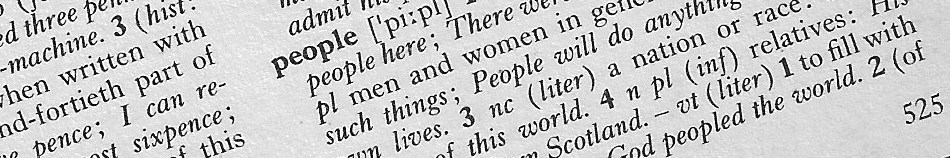
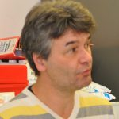
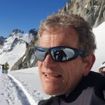
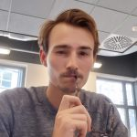
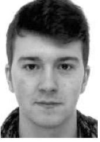
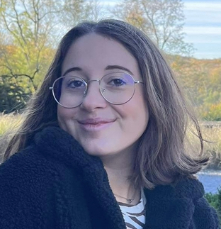

Year after year, I had the invaluable chance to work with many people.They are listed in this page.
|  |
Serge Cuvelier
Technical Staff
Email
Phone: +32(0)65 37 38 23
|
|  |
Pascal Damman
Full Professor - Principal Investigator
Email
Phone: +32(0)65 37 38 19
|
|  |
Ayrton Draux
Post Doc
Email
Phone: +32(0)65 37 38 18
|
 |
Louis Duhayon
Master Student
Email
Phone: +32(0)65 37 38 18
|
| |
Clara Mefop So
Master Student
Email
Phone: +32(0)65 37 38 18
|
 |
Guillaume Palumbo
PhD Student
Email
Phone: +32(0)65 37 38 18
|
|  |
Quentin Thomas
PhD Student
Email
Phone: +32(0)65 37 38 18
|
|  |
Mary Williams
Master Student
Email
Phone: +32(0)65 37 38 18
|
Alumni
Denis Dumont (PhD) – 2022 (Postdoc CEA, Paris)
Paul Rambach (PhD) – 2020 (Ecole des ponts, Paris)
Amandine Lechantre (PhD) – 2019 (PostDoc, ESPCI)
Huy Phan-Dinh (PhD) – 2016 (Research scientist, Industry)
Maurine Houze (Master) – 2016 (teacher)
Branko Kolaric (PostDoc) – 2014 (Research scientist, UNamur)
Robin Sotiau (Master) – 2014 (consultant)
Julie Pilate (PhD) – 2014 (consultant)
Fabian Brau (PostDoc) – 2013 (Associate Professor ULB)
Déborah Lanterbecq (PostDoc) – 2013 (Research scientist CARAH)
Rodica Morarescu (PostDoc) – 2013
Thomas Bras – 2013
Olga Kruglova (PostDoc) – 2012 (Research scientist KULeuven)
Aurore Olivier (PhD) – 2012 (Quality Control Assistant at Benechim)
Hugues Vandeparre (PhD) – 2011 (operation manager, TBS)
Mélanie Jeusette (PostDoc) – 2011 (Research Scientist Lab B Holding)
Sylvain Desprez (PostDoc) (Materianova)
Sylvain Gabriele (PhD) – (Associate Professor, UMONS)
Abbas Sabbah (PhD) – 2009 (Associate Professor, Lebanon University)
Séverine Sclavons – 2009 (Teacher)
Laurent Cantineau (Master) – 2009
Séverine Coppée (PhD) – 2008 (AVRE Umons)
Gwenaelle Derue (PhD) – 2008 (teacher)
Jérémy Piotte (Master) – 2007
Christophe Poulard (PostDoc) – 2007 (Maitre de conf. U Paris Sud)
Jonathan Lechien (Master) – 2006 (Teacher)
Julien Léopoldès (PostDoc) – 2005 (Maitre de conf. U Paris, ESPCI)
Nancy Baudelet (Master) – 2002
and the very old ones ...
Christian Fougnies (Research Scientist, Cosucra)
Jean-François Moulin (PhD) (Research Scientist, Helmholtz-Zentrum,Munich)
Laurent Paternostre (PhD) (Coordinator, Hainaut Analyse)
Renaud Vallée (PhD) (CNRS researcher, CRPP Bordeaux)
Catherine Vandermiers (PhD) (Analyst, Hainaut Analys)